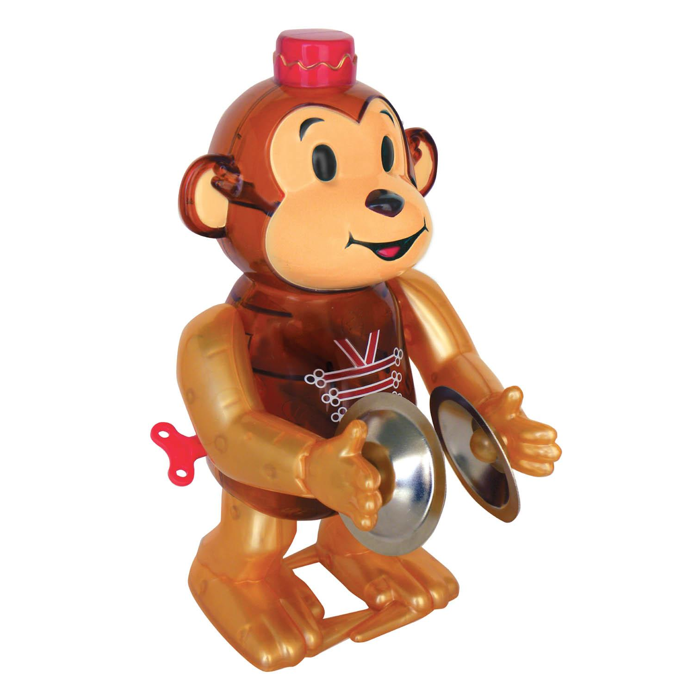

До скольки можно шуметь?
В
России уровень шума в дневные и ночные часы регулируется
Федеральным законом № 52 «О санитарно-эпидемиологическом
благополучии населения», в котором указан допустимый уровнь
шума , т.к. «шуметь» в наушниках вы можете круглосуточно.
Время для более громкого, дневного шума устанавливается региональными законами, среднее дневное время, например для проведения ремонта, обычно с 7 утра до 22 вечера, в выходные дни с 9 до 23 часов.
В США шум регулируется законами штатов более строго и детально, законами может быть запрещен любой громкий звук производимый от инструментов, клаксонов, телефонов и даже часов. Узнать, о том, что звук превышает норму можно просто, если он хорошо слышен на расстоянии 100 футов от объекта, в котором находится звучащий предмет. Шуметь в квартире, или шуметь на участке дома, например газонокосилкой, запрещается с 7 вечера до 8 утра. 
В Европе время для шума устанавливается законами городов. Существуют часы, когда надлежит соблюдать тишину и покой. Время покоя может немного отличаться в зависимости от места проживания, по будням оно находится в периоде с 22 до 7 часов и с 13:00 до 15:00 дня. В выходные часы отдыха могут начинаться с 19 вечера до 8 утра.
В воскресенье в Германии, Австрии и некоторых других европейских городах действует запрет на произведение шума по всей территории. Точно также от шума в воскресный день отдыхают и жители Оренбурга.
Больше всего не любят шум в Китае, например в Пекине любые ремонтные работы разрешается проводить с 8 до 18 с перерывом с 12 до 14 часов, а в самом городе создают специальные звукоизолирующие помещения, где можно отдохнуть в тишине.